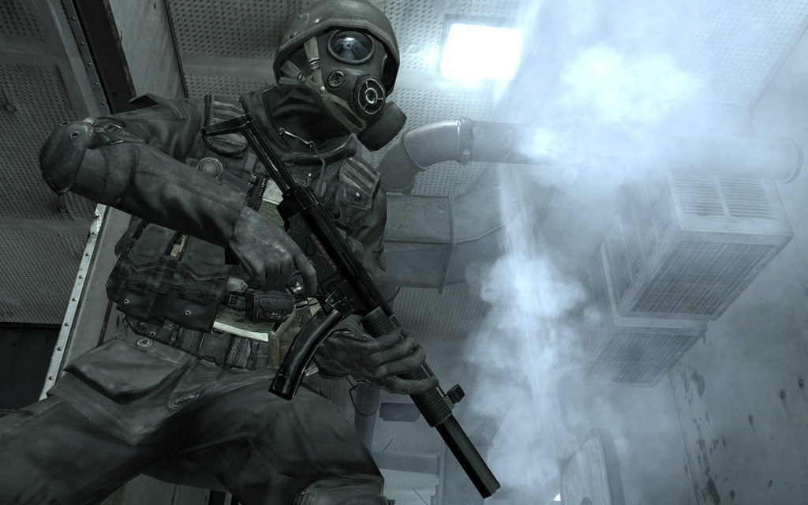
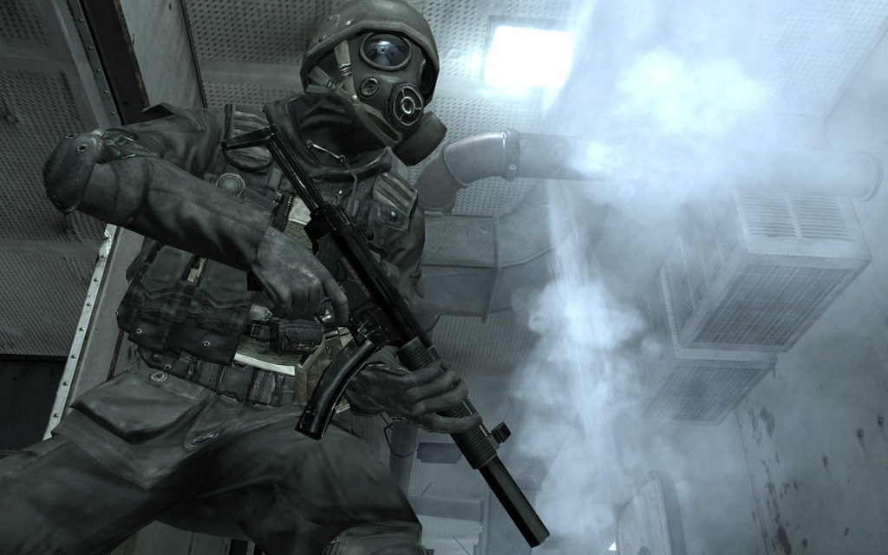

The Most Influential Games Of The 21st Century: Call Of Duty 4: Modern Warfare
 

In 2007, the newly annual Call of Duty series--while incredibly popular--had a lot of competition. It was a landmark year in games, particularly for shooters; BioShock, Team Fortress 2, and Halo 3 all arrived that year, as did Mass Effect, Assassin's Creed, and Portal. These days, you might not expect the yearly Call of Duty entry to capture lasting attention among a sea of inventive new franchises. But in 2007, the fourth Call of Duty game, Modern Warfare, was a standout in its own right. Modern Warfare not only marked a shift for the series--it also fundamentally altered multiplayer shooters for over a decade to come.
Datum objave: 30.3.2019.
Izvor